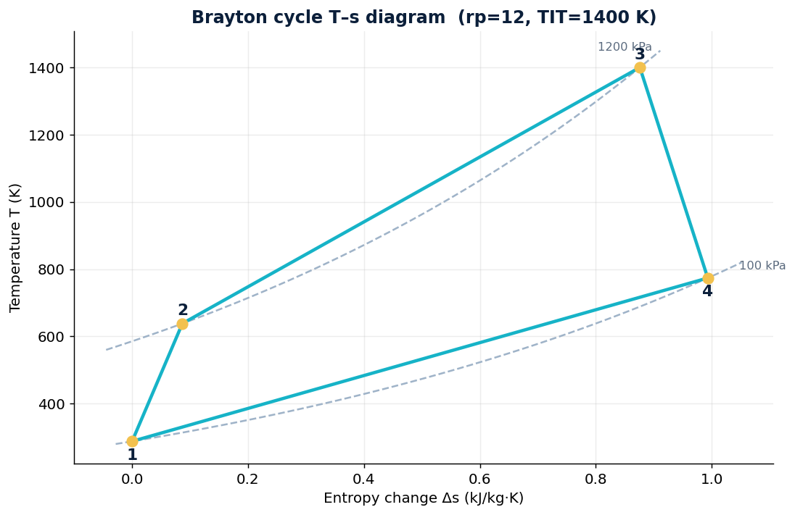
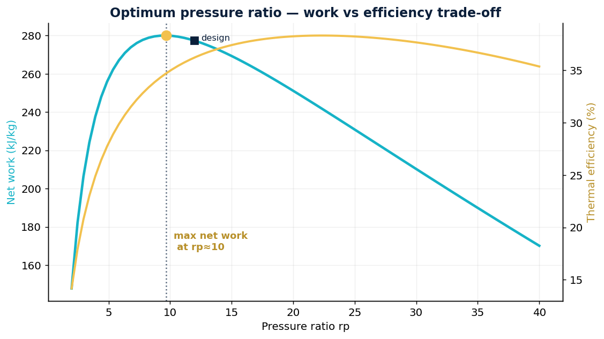
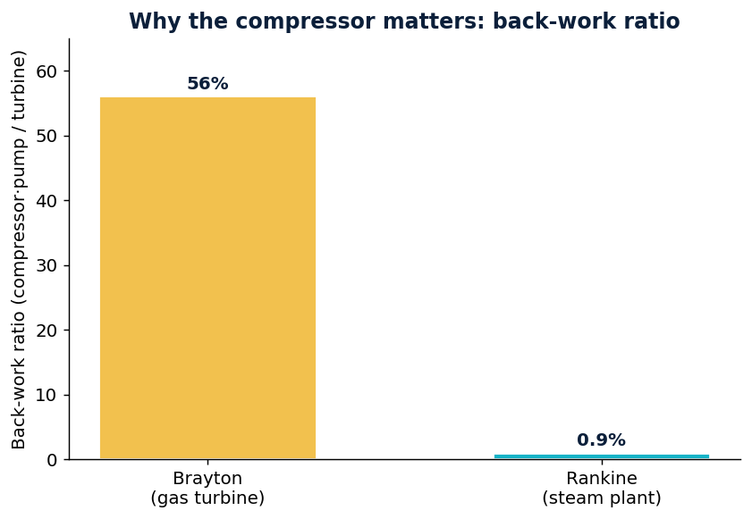

The thermodynamic cycle behind every gas turbine and jet engine. Full air-standard analysis: each state, efficiency with real compressor/turbine losses, the back-work ratio, the optimum pressure ratio for maximum net work — and the direct link to jet propulsion and aerospace.
Analyse an air-standard Brayton cycle: pressure ratio 12, turbine-inlet temperature 1400 K, compressor η = 0.85, turbine η = 0.88, inlet 288 K / 100 kPa. Find the efficiency, the work split between compressor and turbine, and the pressure ratio that maximises net work.

| State | Point |
|---|---|
| 1 — compressor inlet | 288 K · 100 kPa |
| 2 — compressor exit | 638 K · 1200 kPa |
| 3 — turbine inlet | 1400 K · 1200 kPa |
| 4 — turbine exit | 774 K · 100 kPa |
Efficiency rises with pressure ratio, but net work peaks — there is an optimum rp for a given turbine-inlet temperature. And the compressor is expensive: it eats most of the turbine's output.


Replace the closed loop with the atmosphere and the same four processes appear: the inlet and compressor raise the air pressure (1→2), the combustor adds heat (2→3), and the turbine expands the gas (3→4) — but here the turbine only has to drive the compressor. All the remaining energy is left in the fast exhaust jet, which produces thrust:
The very same analysis sizes aircraft engines, auxiliary power units (APUs), and the gas turbines behind ground and marine power. It is also the bridge in my own profile: the reliability, availability and performance thinking I apply to industrial systems is the same that governs propulsion and aerospace power systems — and connects naturally to my work in satellite navigation (GNSS), where availability, integrity and continuity are the equivalent figures of merit.